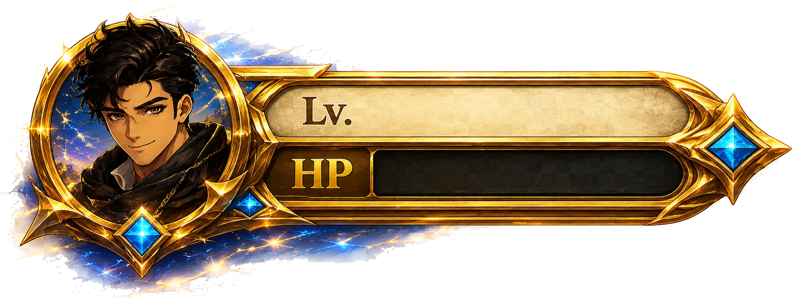
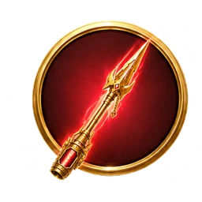
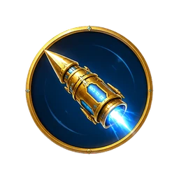
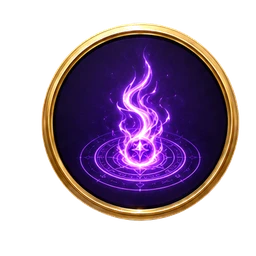

FOE 1/3
—
0
×1
CASH
OUT

1
1000



✹
BLITZ
DODGE
‹
⚙
🔊
TITAN
GUARD
One warrior. One pike, three forms. Three colossal foes. Build your score — then
cash out before you fall
.
CHOOSE
Attacks recharge on their own —
Shoot
fast & light,
Cast
heavier,
Strike
slow & devastating.
HIT
Line the shrinking ring up with the
glowing target
on the titan.
DODGE
When the titan strikes,
tap anywhere
the instant it lands.
BLITZ
Dodging charges the gold
— when your pike blazes, unleash the ultimate combo.
CASH
Bank your score anytime. Fall first and you lose it all.
ENTER BATTLE
SEED
🎲
VICTORY
0
FIGHT AGAIN
MENU
Run
seed
restart
pause
speed
1.0x
Enemy
force
fire attack
enemy −50%
Player
LV
set
+1
clear cds
fill blitz
mult
1
heal
god: off
Timing log
clear
CRASHARCADE · TITAN GUARD v0.48.1